Danilo Briceño
Innovator
Founder @ekiscyber
AppSec / DevSec
description
Notes on the CISSP Exam and My Study Method
↗
28.02.2023
description
My First Web Application: Cripsos.com
↗
22.06.2022
play_circle
My First Web Application in JavaScript and NodeJS
↗
22.06.2022
description
Can PowerApps Create a Functional Application Without Code?
↗
01.06.2022
play_circle
Security Holes - TRES
↗
04.05.2022
play_circle
Security Holes - DOS
↗
21.04.2022
play_circle
Security Holes - UNO
↗
05.04.2022
description
5 Initiatives to Drive Zero-Trust Adoption
↗
07.09.2021
description
Zero-Trust and its use in life itself
↗
07.06.2021
description
A New Trend of 2021: Cybersecurity Mesh
↗
21.05.2021
Page 1 of 1